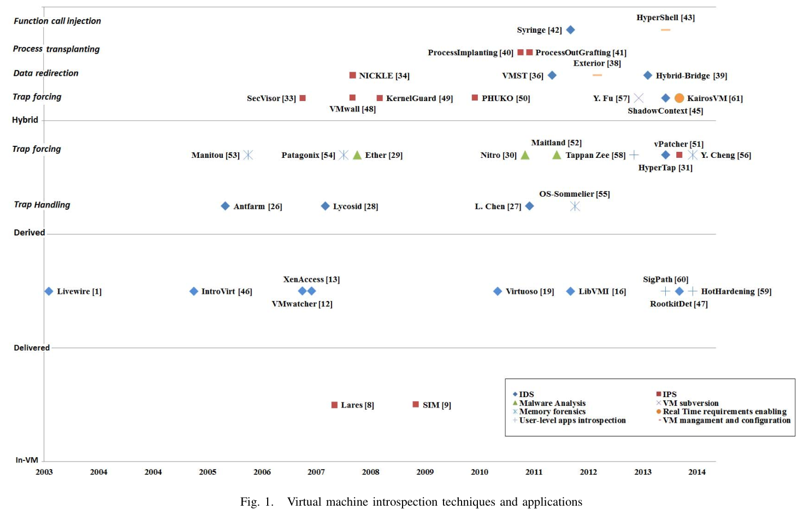

虚拟机自省技术和应用1*
[toc]
VMI 是一种可以在 hypervisor 层监控虚拟机的技术。对虚拟机活动完整但无语义的可见性，以及隔离性。VMI 工作从弥合语义鸿沟到利用已有的 VMI 提供新型基于 hypervisor 的服务。本文旨在对现有的 VMI 技术及其应用进行调查和分类。
VMI 是从 hypervisor 或特权 VM 中监控目标虚拟机（TVM）的运行状态和活动。VMI 的概念首先被 Garginkel 和 Rosenblum2 在 2003 年作为 hypervisor 级别的入侵检测系统引入，结合了基于网络和基于主机的 IDS 的优点，即隔离性和可见性。基于 VMI 的应用有：防篡改：与不可信的 VM 高度解耦并隔离；高效，能够像 hypervisor 一样检查任何操作系统活动，可以访问所有 Guest OS 状态（CPU 寄存器、内存、设备）；抗逃逸，能够修改这些状态并干扰 Guest OS 的每个活动。
然而，对 Guest OS 的 hypervisor 试图只是二进制数据和寄存器值，没有操作系统抽象和高级语义。这个问题被称为“语义鸿沟”。在 hypervisor 层面重构操作系统抽象并解释虚拟机内存数据和硬件状态被称为“弥合语义鸿沟”。已经有很多工作围绕语义重构展开，提出许多的 VMI 技术。
之前的综述要么关注现有 VMI 系统设计中的安全性问题，要么将范围限于内存和基于软件的 VMI，本文旨在提供深入技术分析，覆盖更广的 VMI 系统和应用，但只针对 x86 架构的 VMI。根据 VMI 获取语义信息的方法分类。
弥合语义鸿沟*
本节描述主要的 VMI 技术，根据语义信息的检索位置和方式将这些 VMI 技术分为 4 个主要类别：in-VM、out-of-VM delivered、out-of-VM derived（陷入处理，强制陷入）或这些方法的组合（强制陷入、数据重定向/影子内存、进程移植、函数调用注入）。
- in-VM 技术，hypervisor 与从内部监控 Guest OS 的 agent 通信，以这种方式避免语义鸿沟。
- out-of-VM 技术，才算是真正的 VMI，完全在 hypervisor 层执行 VMI，弥合语义鸿沟使用的语义知识来自于显式传递（OS 源码、技术参考、内核符号）或源于底层硬件架构。
In-VM (Lares, SIM)*
In-VM 技术规避了语义鸿沟问题，主要挑战在于安全的 VMI 架构设计。虚拟机内的 agent 从内部监控 Guest OS，并将其活动暴露给 hypervisor，hypervisor 用于启用所需安全策略的实施。
Lares3 是一种 in-VM 自省架构，hypervisor 在内核组件（如系统调用处理例程）中注入钩子以进行监控。每个钩子会调用相应的有也由 hypervisor 注入的处理程序。当受监控活动执行而调用处理程序时，它们会收集活动的相关信息，并通过 hypercall 传达到 hypervisor。Hypervisor 将信息转发到 Sec VM 中的监控程序，并通过写保护内存页来保护注入的钩子和处理程序。

SIM4 框架与 Lares 非常相似。主要区别在于，SIM 不是通过 hypercall 传递信息，而是将它们存放安全的内存空间。在 hypervisor 或 Sec VM 中的监控程序可以访问此内存空间进行监控。

虚拟机内自省代理的使用意味着它们继承了基于主机监控的弱点：对 OS API 暴露的可见性的限制，暴露在恶意软件的攻击下，缺乏透明性。而 out-of-VM VMI 不受这些限制。
Out-of-VM delivered (Livewire, VMwatcher, XenAccess, LibVMI, Virtuoso)*
主要包括早期的被动 VMI 技术，使用传递的语义信息弥合语义鸿沟。因此，有关 Guest OS 内部和 OS 数据结构的位置和定义的知识：显式地合并到 VMI 系统中，从操作系统源码中提取，或者从内核符号表获取。
Livewire2 是 Garginkel 引入 VMI 时的系统，旨在检测 VMware workstation 上运行的 Linux 虚拟机中的入侵。Livewire 使用适用于 hypervisor 的 crash（一种内核转储分析工具，包含有关内核的知识）获取 Linux 中数据结构的语义信息。Livewire 可以定期将通过 crash 从 hypervisor 获取的 OS 状态信息与通过远程 shell 由 OS 本地工具获得的信息进行比较。两种视图之间的不一致可能会暴露入侵行为。

VMwatcher5 使用内核符号文件 System.map 在 VM 内存中定位感兴趣的 OS 数据结构，弥合了 Linux Guest OS 的语义鸿沟。这些数据结构的定义可以从 Linux 源码中获取，用于解释暴露给安全系统的 OS 数据结构。类似的，使用文件系统知识来解释暴露给安全系统的虚拟磁盘数据。通过这种方式，宿主机上的安全系统可以透明地检查 Linux Guest OS 暴露出的数据，而不需要本身支持 Linux。VMwatcher 还可以使用数据比较 hypervisor 获取的 Guest OS 信息和 Guest OS 内部工具获取的信息来检测隐藏的恶意软件和 rootkit 等。

Payne 等人提出了 XenAccess6，一个用于 Xen 的 VMI 库，创建了 DomU 内存的高级和语义感知抽象， 简化从 Dom0 访问其内存的过程。它允许 VMI 系统映射 DomU 内存页，其中包括：给定的内核虚拟地址、某个内核符号、或由 PID 标识的给定进程的内存空间中的虚拟地址。XenAccess 首先提取进程列表的内核符号（如 Linux 的 init_task）并遍历进程信息结构，直到找到给定 PID 的那个进程和它的页目录表，最终得到页面的给定虚拟地址的页面。XenAccess 使用从 Linux 源码和 Windows 技术参考中的知识来遍历不同的数据结构。之后 Payne 扩展了 XenAccess 并创建了新的 LibVMI7 库，还支持 KVM，而且集成了流行的内存取证框架 Volatility。

Virtuoso8 通过自动化弥合语义鸿沟和 VM 外自省工具的创建，显著地推动了 VMI 技术的发展，而不需要逆向或 Guest OS 内部的先验知识。Virtuoso 的关键思想是通过记录和学习 Guest OS 中训练程序的指令执行来自动生成自行工具，例如通过重放从执行 getPid 训练程序中学到的指令来获取进程 PID。这些训练程序使用 Guest OS API（本地定位、访问、正确遍历感兴趣的 OS 数据结构，并最终返回需要的信息）返回自省所需的信息。生成的自省工具稍后在 Sec VM 中 TVM 的内存上执行，因此可以恢复自省需要的信息。

这些 VMI 展示了使用传递的语义信息使 VMI 和 Guest OS 类型和版本紧密相关。OS 更新后，特定的语义信息可能不再可用，这限制了它们在现实世界云环境的实用性。内核符号表也并不总是可用。周期性被动监控数据结构可能给恶意软件执行然后隐藏踪迹的机会。
最后，就算假设这些数据结构在运行时不变，VMI 还易受 DKSM9 和 DKOM10 的影响。直接内核结构操纵（DKSM）攻击包括操纵内核数据结构定义的语法和语义以将过时的语义知识传递给 VMI 工具。因此 VMI 视图出现错误，而 in-VM 视图可能被保持正确，VM 正常运行，因为 Guest OS 内核代码也被修改以保持正确解析被操纵的内核数据结构。直接内核对象操纵（DKOM）攻击根据恶意操纵那些根据 Guest OS 活动任意更改的内核数据结构，例如进程列表、出站入站的网络数据包计数器等。Rootkit 可以从进程列表中删除而已进程，同时将其保留在调度程序列表中，恶意进程将继续正常执行，但不会出现在 VMI 进程列表中。
为了解决这些弱点，出现了一类新的 out-of-VM VMI 技术，依赖于从硬件架构知识中获得的语义信息。
Out-of-VM derived (Antfarm, Lycosid; Ether, Nitro, HyperTap)*
硬件架构越来越多地设计提供现代操作系统功能，如多任务处理、用户权限、内存管理和保护、系统虚拟化等等。VM 外部派生的 VMI 使用硬件提供的功能通过观察和解释硬件状态和事件来检查 Guest OS 活动。VM 外部派生的 VMI 技术可以做到 OS 不可知、抵抗内核数据攻击和恶意软件规避。将这些 VMI 分为两类：通过处理 Guest OS 活动本地引起的到 hypervisor 的陷入和通过使用基于硬件的钩子强制陷入处理。
基于陷入处理*
当 hypervisor 接收到陷入（即 VM Exit）来处理 Guest OS 的敏感操作时，VMI 系统使用从处理器上下文（寄存器）派生的信息执行主动监控。在硬件辅助虚拟化的情况下，通过在 VMCS 中设置相应的控制位可以自动或按需触发此类陷入。
Antfarm11 是第一个从 x86 架构中获取语义信息的 VMI 系统，通过跟踪进程空间来跟踪进程创建、切换和推出。这是通过跟踪对 CR3 寄存器的写入操作实现的，CR3 指向运行进程的页表地址。写入 CR3 会触发 VM Exit，因此允许 Antfarm 维护由 CR3 值组成的进程列表，如果 Antfarm 观测到新的（或已有的） CR3 值，即检测到进程创建（或切换）。当所有内存页都未映射时，检测到进程退出。借助 CR3 Target Value List 的 Intel 硬件虚拟化扩展，可以通过限制 CR3 写入触发的 VM Exit 数量来减少 Antfarm 带来的性能损失。
Lycosid12 扩展了 Antfarm 通过比较两个视图的进程列表长度来检测隐藏进程，一个是使用 VMI 构建的，一个是使用 Guest OS 程序获得的。在 VMI 视图中的进程执行时却不再 Guest OS 视图中就检测到了隐藏进程。
基于触发 VM Exit 的 VMI 覆盖范围有限，一些需要自省的事件，如系统调用、内存访问不会被 hypervisor 捕获。
基于强制陷入*
这类 VMI 利用基于硬件的钩子在感兴趣的 Guest OS 活动（如系统调用）中强制触发 VM Exit。
Ether13 是第一个利用 VMI 优势和硬件虚拟化扩展来构建透明的 hypervisor 层的恶意软件分析工具的系统，它可以检测和提取动态生成的代码并跟踪恶意系统调用。为了保证透明性，Ether 一次执行一条指令，以发现和误导要检测 Ether 存在的恶意软件指令，通过设置 CPU 调试陷入标志以在每条指令后强制触发 VM Exit 实现。为了检测和提取恶意软件动态生成的代码，Ether 会捕获修改内存页面并转储。通过写保护影子内存页捕获（然后模拟）每个内存写入尝试来跟踪修改的页面。为了捕获对这些修改页面的执行尝试，把每个页面都设置为不可执行，然后在每个执行尝试时，转储这些页面以提取动态生成的代码。为了深入分析恶意软件行为，Ether 会跟踪恶意软件的系统调用。在现代 x86 架构中，系统调用可以通过软件中断或快速系统调用机制来实现。为了跟踪基于中断的系统调用，Ether 保留中断号 0x2E （Windows 系统调用中断号）的处理程序，将其设置为不存在的页面。因此，int 0x2E 指令将触发 VM Exit，Ether 会保存 CPU 寄存器值（包括系统调用号及其参数）。Ether 通过将中断处理程序的地址写入 EIP 寄存器恢复 VM 执行来模拟被捕获的系统调用。使用 SYSENTER 指令的快速系统调用，其处理程序地址在 SYSENTER_EIP_MSR 寄存器中。为了跟踪快速系统调用，Ether 以与基于中断的系统调用相同的方式捕获。评估表明，Ether 可以成功解压所有常用的加壳程序（混淆器），并跟踪所有恶意软件调用的 Windows 系统调用。

Nitro14 是另一个基于 VMI 的 x86 架构系统调用跟踪的工具。与 Ether 不同的是，Nitro 具有更强的硬件和操作系统可移植性，且性能开销更少。为了跟踪基于中断的系统调用，AMD SVM 提供了自动捕获所有中断的机制，但在 Intel VT-x 中，只能自动捕获前 32 个中断（系统中断），并没有提供默认的硬件机制来捕获其余的中断（用户中断）。为了克服这一限制并在两种实现中启用中断捕获，Nitro 操作中断描述符表寄存器（IDTR）并将中断描述符表（IDT）的大小设置为 32 个条目。因此，用户中断被捕获，因为它们的处理程序地址超出 IDT 界限，而系统中断可以被两种实现的硬件扩展捕获。考虑快速系统调用，Intel 指令 SYSCALL/SYSRET 可以通过清楚 SYSCALL Enable 标志来强制捕获，而捕获 SYSENTER/SYSEXIT 指令需要将 SYSENTER_CS_MSR 寄存器设置为 NULL。除了捕获和模拟两种系统调用之外，Nitro 还记录了每个系统调用的进程标识符，方法是将 CR3 与其第一个有效页面的地址结合起来，在 VM 生命周期内形成唯一的进程标识符。
HyperTap15 依赖于 VM Exit 处理和强制跟踪进程、线程和系统调用来实现：在一个阈值时间过去而没有进程切换时，检测到 Guest OS；通过比较 hypervisor 和 Guest OS 内进程和线程视图检测隐藏的 rootkit 和恶意软件进程；通过集成 Ninja 的规则检测提权攻击。HyperTap 通过处理写入 CR3 触发的 VM Exit 来跟踪进程执行和每个进程的 CPU 时间消耗。通过写保护包含 TSS 的内存页实现与 TSS 相对应的线程切换跟踪，HyperTap 使用新的 TSS 中的堆栈指针作为线程标识符。最后，通过处理 VM Exit 来跟踪基于中断的系统调用，而快速系统调用通过将 SYSENTER_EIP_MSR 中指定的处理程序地址设为不可执行来跟踪。

VM 外部派生的 VMI 技术很可靠，但是只能观测到涉及硬件的 Guest OS 活动，也就限制了此类 VMI 的应用范围。
Hybrid (Secvisor; NICKLE, VMST, Exterior, Hybrid-Bridge; Process implanting, Process out-grafting; Syringe, HyperShell)*
混合 VMI 技术以上三种技术的结合，以实现更高的鲁棒性、可靠性并扩展可能的 VMI 应用范围。
基于强制嵌入*
Seshadi 等人提出了一个半虚拟化并支持 VMI 的 hypervisor，称为 Secvisor16，旨在确保移植的 Linux 内核代码完整性，在整个生命周期内保护其免受代码注入攻击。Secvisor 需要修改源码，重新实现引导、内核模块加载和卸载功能，使它们会调用 hypercall，Secvisor 在使用基于白名单的策略决定是否加载代码到内存。Secvisor 使用 AMD SVM 的嵌套页表（NPT）提供硬件内存保护，以保护批准的内核代码免受非法修改和执行。在修改内核代码时（加载/卸载内核模块），Secvisor 维护两个同步的 NPT，一个用于内核模式，仅允许内核代码执行，另一个用于用户模式，只允许用户代码执行。在两个 NPT 中，内核代码都受谐波爱护，禁止 VM 内部对内核代码进行任何修改。每次 CPU 在用户态和内核态切换时，都会强制陷入到 Secvisor。在进入内核态时，Secvisor 首先检查代码是否是经过批准的内核代码，如果是，则加载内核模式的 NPT 以防止在内核权限下执行任何用户代码。然后将 CPU 特权级设置为内核模式，恢复内核代码执行。当 CPU 返回用户态时，Secvisor 加载用户模式的 NPT，然后将 CPU 权限设置会用户模式，恢复 VM 的执行。Secvisor 可以通过这种方式保护 Guest OS 免受代码注入攻击，但它需要修改 OS 源码，在实践中比较困难。
数据重定向/影子内存*
Riley 等人提出了 NICKLE17 ，一个建立在 QEMU 之上基于 VMI 的系统，通过使用影子内存方案防止内核级 rootkit。NICKLE 在逻辑上把物理内存拆分为标准内存和影子内存，后者对于 Gust OS 是透明且不可访问的，且仅包含经批准的内核代码。与 Secvisor 那样修改 OS 源码来拦截和引导和内核模块加载和卸载的执行不同，NICKLE 使用 OS 特定的信息定位和拦截这些函数，以检查要加载的内核代码。经批准的内核代码从标准内存复制到影子内存中。运行时，VM 即将运行内核指令时，NICKLE 验证它是否在标准和影子内存中都存在（是否属于批准的内核代码），如果是，NICKLE 就控制 Guest OS 的物理地址转换，从影子内存获取内核指令，否则就检测到非法代码执行，用 return -1 替换该指令使恶意内核代码终止。访问内核数据、用户代码和用户数据的指令会被重定向到标准内存。评估表明，NICKLE 可以有效检测和阻止已知的 Windows 和 Linux 中 注入和执行恶意内核代码的 rootkit。然而由于它建立在 QEMU 之上，会产生很大的性能开销。

Fu 和 Lin 提出了 VMST18，一个基于双 VM 的自省系统，通过将 Sec VM 的监控工具（如 ps、lsmod 等）转换为可以检查相同 OS 版本的 Guest VM 的内核数据的程序。与需要训练生成自省工具的 Virtuoso 相反，VMST 自动重用 Sec VM 监控工具的代码，并将它们对内核数据的访问重定向到 Guest VM 的内存。为此，VMST 检测 Sec VM 监控工具（文件访问、网络访问、进程控制）中与自省相关系统调用的第一个执行上下文，然后识别可重定向的内核数据，最后执行到 Guest VM 内存的重定向。VMST 检测系统调用相关指令（如 SYSENTER、SYSEXIT、INT 0x80、IRET）的执行检测系统调用的开始和结束。在 Sec VM 监控工具执行系统调用期间，VMST 通过在线污点分析技术识别对内核全局变量指针和从中派生的指针访问来识别可重定向的内核数据。虚拟地址到物理地址转换期间，通过使用 Guest VM 的物理地址而不是 Sec VM 来执行所识别的内核数据的访问重定向。

Fu 和 Lin 后来扩展了他们的工作，开发了 Exterior19， 是一种 VM 外部的 shell，无需身份验证即可在 Guest VM 上使用以检查其状态和活动，必要时（重新）配置它并在成功攻击后恢复它。Exterior 适用于 VMST 相同的技术来启用由 Sec VM shell 命令调用的系统调用，以在 Guest VM 状态上执行读写操作。

基于双 VM 的自省技术81819，可以成功弥合语义鸿沟，但是它们在 QEMU 上进行大量执行分析，会产生巨大的性能开销。Saberi 等人提出 Hybrid-Bridge20，一个基于三重 VM 的自省架构，实现了与 VMST 相同的目标，性能损失更小。Hybrid-Bridge 包含两个运行内核版本与 Guest VM 相同的 Sec VM。第一个 Sec VM，称为 Slow-Bridge，运行一个修改过的 VMST，根据监控程序的操作数的可重定向性将其分类为操作一个、两个或没有可重定向内核数据的指令，然后将有关这些指令可重定向的元数据缓存在共享内存中。第二个 Sec VM，称为 Fast-Bridge，运行在基于硬件的虚拟化（如 KVM 之上），使用 Nitro 来检测系统调用上下文和慢桥共享的元数据，以快速识别系统调用中每条指令的重定向策略。快桥通过操纵页表条目（即操纵地址转换）来重定向对 Guest VM 内核数据的访问。对于缺少元数据的指令，快桥会暂停 Guest VM 的执行然后调用慢桥对 Guest VM 快照执行污点分析，以便对每条指令进行分类并生成有关其重定向策略的元数据。一旦丢失的元可用，快桥就会恢复 Guest VM 的执行。因此 Hybrid-Bridge 实现了与 VMST 相同的目的并避免了巨大的性能损失，因为只有在需要时才进行污点分析，而且 VMI 主要在基于硬件的虚拟化中执行。但是现实中为每个内核版本使用两个同级 VM 进行监控不切实际。

进程移植*
Gu 等人提出了进程移植（process implanting）21，这是一种通过在 Guest OS 中植入自包含的内省程序来启用主动 VMI 的技术。关键思想是在受信任的 OS 上编写程序实现所需的监控任务，然后静态编译得到可执行文件，其中包含监控代码以及用于监控的必要操作系统库的受信版本。为执行 VMI，hypervisor 在 Guest VM 中随机选择一个进程，保存其上下文并用自省程序替换其代码。通过这种方式，在 Guest OS 中执行自省程序。此技术避免了语义鸿沟问题，但是如果选择的受害者进程被调度的机会很小或很重要，进程植入后会使自省无效或有害。该技术易受 DKOM 和 DKSM 攻击，因为植入自省程序是静态链接的，无法处理对内核数据的恶意操纵。

Srinivasan 等人提出了进程外移植（process out-grafting）22，一种进程注入的反向方法，将可疑进程从 Guest OS 移植到 Host OS。目标是在 Host OS 上使用传统的安全工具避免检查外移植进程期间出现语义鸿沟。为此，hypervisor 在 Host OS 上创建了一个虚拟进程来保存移植进程的上下文。然后调度执行这个虚拟进程就执行了外移植进程。为了保护 Host OS 免受外来进程的影响， hypervisor 只允许执行其用户态代码，并将系统调用和页错误重定向会 Guest OS。为此，hypervisor 隐藏了外移植进程的系统调用接口，强制捕获系统调用。Hypervisor 将系统调用转发到 Guest OS，更具体地说是转发到一段代码（stub，存根），插入到外移植进程的原始映像中以处理系统调用。Hypervisor 将共享通信缓冲区中的系统调用号和参数传递给 stub。当进程在 Guest OS 中调度执行时，系统调用由 stub 调用，再将返回值传给 hypervisor。最后，hypervisor 将系统调用结果传递给 Host OS 中的外移植进程，恢复其用户态的执行。虽然这种方法避免了语义鸿沟，但是不适合监控整个 VM 和实时监控。

函数调用注入*
Carbonne 等人提出了 Syringe23，旨在结合 VM 外部自省技术的安全性与 VM 内自省的鲁棒性。Syringe 通过将 Sec VM 中的函数调用注入到 Guest OS API 中并检索返回信息来弥合语义鸿沟并获取 Guest OS 活动信息。为此，Syringe 在选定的代理进程中的选定指令上设断点。当指令陷入时，Syringe 保存代理进程的上下文，将 EIP 寄存器设置为要调用的函数地址并将参数和返回地址（断点地址）入栈。然后恢复 VM 以执行函数调用，函数完成执行后会尝试返回代理进程代码，由于返回地址上的断点，还会陷入到 Syringe。Syringe 返回数据，恢复保存的代理进程的上下文并恢复 VM 执行。通过这种方式，Syringe 可以使用 API 获取有关 Guest OS 的信息，而性能开销可以忽略不计。但由于 Guest OS 上的监控功能有限，而且 Syringe 不会像其他纯粹的 VM 外部自省系统可以对入侵作出反应。

Fu 和 Lin 提出了 HyperShell24，一个基于 VMI 的 shell，建立在系统调用作为用户级应用程序的接口来使用 Guest OS 系统内核服务并管理其底层状态的认知之上。因此，使用 Guest OS 系统调用作为 hypervisor 接口也可以用来管理 Guest OS 底层状态。HyperShell 的工作原理如下：Host OS 管理员在 HyperShell 中执行 shell 命令（如 ps、lsmod 等）。这些命令调用的系统调用被 hypervisor 使用动态库插入技术拦截。与进程创建、动态库加载、内存管理和屏幕输出相关的系统调用在主机上执行，而其他的系统调用（称为 R-syscall）注入到 Guest OS 中的辅助进程中执行。HyperShell 通过共享内存将 R-syscall 编号和参数传递给辅助进程，辅助进程执行相应的系统调用后发回返回的数据。由此，hypershell 可以产生 shell 命令的预期效果，就好像它们是由经过身份验证的管理员从 Guest OS 内部启动的一样。Hypershell 的性能开销很低，且不会影响 VM 及其中的应用程序的执行，这些优势使得它可以在现实世界中非常实用。

VMI 应用*
下面主要是介绍 VMI 的各种应用。
-
入侵检测，VMI 让 hypervisor 能够了解 VM 活动并观测其状态变化。因此，hypervisor 可以检测违反预定义安全策略的入侵而引起的活动和变化。25678通过读取内核数据结构，像进程列表、打开文件、套接字信息等。111215还可以通过处理 CR3 写操作监视进程创建和切换从而检测隐藏进程。15通过陷入 TSS 写操作并挂钩 SYSENTER_EIP_MSR 执行的处理程序的执行来检测线程切换和跟踪系统调用。1819202325使用系统调用重定向和注入来读取和修改 VM 状态。
-
入侵防御，将对 VM 状态和活动的感知与基于硬件的钩子相结合，hypervisor 可以超越检测并尽快阻止漏洞利用尝试。
-
恶意代码分析，VMI 进一步扩展了 hypervisor 的能力，使其能够深入检查可疑和恶意进程的行为，跟踪系统调用，捕获修改内存页的执行来检测动态生成的代码。
-
内存取证，支持 VMI 的 hypervisor 可以在语义上观测和解释 VM 内存中的内核和用户空间。通过结合取证框架可以进一步分析。
- 虚拟机颠覆，虽然 VMI 提出是在信任 hypervisor 的基础上，但恶意的 hypervisor 可以利用 VMI 技术更改已执行指令的语义或更改系统调用返回的数据。
- 虚拟机管理和配置，1924 可以创建一个 VM 外的 shell，用于管理和配置 VM ，而无需身份验证。
- 用户态应用自省，现有的工作主要集中在弥合与内核代码和数据相关的语义鸿沟以保护 Guest OS。最近的工作通过分析内存访问模式或模糊数据结构来弥合设计用户应用程序的语义鸿沟，以便定位重要的数据结构。
- 实时调度，VMI 还可以使 hypervisor 优化 VM 执行的调度，提高其中允许的实时应用程序的性能。可以通过挂钩与实时任务创建和结束相关的函数实现，以推断有关其实施需求的信息，做出最佳调度决策。
讨论与总结*
下图为对 VMI 技术分类和应用以及演变。

VMI 最初是作为 out-of-VM IDS 出现的，监视 Guest OS 的数据结构，是被动的、周期性的。而 in-VM VMI 执行主动监控并在入侵发生之前防止入侵，但它继承了基于主机的 IDS 的弱点。为了克服两个类别的弱点，从硬件状态和事件中推断有关 Guest OS 活动的 out-of-VM derived 技术出现。除可靠性外，它主动监控 Guest OS，并可以做高级内存取证和动态恶意软件分析。而这种技术的缺点是硬件提供功能有限。因此，需要混合内省技术结合各方面的优势。
现有的 VMI 技术对于云计算环境还不够成熟，还需进一步研究。
- 在弥合语义鸿沟时需要可信的组件和信息源以避免对 VMI 系统的攻击，Guest OS 报告的信息其实不可信。
- 监控大量异构 VM 平台时需要可移植性、可扩展性和性能开销问题。
- 用户隐私问题，VMI 从内核和用户空间读取或提取敏感信息，也可在未授权情况下访问 VM，公有云采用自省应该考虑用户隐私。
参考文献*
-
HEBBAL Y, LANIEPCE S, MENAUD J M. Virtual Machine Introspection: Techniques and Applications. IEEE. 10th International Conference on Availability, Reliability and Security (ARES) 2015. ↩
-
Tal Garfinkel, Mendel Rosenblum. A Virtual Machine Introspection Based Architecture for Intrusion Detection. NDSS 2003. ↩↩↩
-
Payne BD, Carbone M, Sharif M, Lee W. Lares: An architecture for secure active monitoring using virtualization. S&P 2008. ↩
-
Sharif M, Lee W, Cui W, Lanzi A. Secure in-VM monitoring using hardware virtualization. CCS 2009. ↩
-
X. Jiang, X. Wang, D. Xu. Stealthy malware detection through vmm-based "out-of-the-box" semantic view reconstruction. CCS 2007. ↩↩
-
B. D. Payne, M. De Carbone, W. Lee. Secure and flexible monitoring of virtual machines. ACSAC 2007. ↩↩
-
libvmi/libvmi: The official home of the LibVMI project is at https://github.com/libvmi/libvmi. ↩↩
-
Dolan-Gavitt B, Leek T, Zhivich M, Giffin J, Lee W. Virtuoso: Narrowing the semantic gap in virtual machine introspection. S&P 2011. ↩↩↩
-
S. Bahram, X. Jiang, Z. Wang, M. Grace, J. Li, D. Srinivasan, J. Rhee, D. Xu. Dksm: Subverting virtual machine introspection for fun and profit. SRDS 2010. ↩
-
Direct kernel object manipulation. http://www.blackhat.com/presentations/win-usa-04/bh-win-04-butler.pdf ↩
-
Jones ST, Arpaci-Susseau AC, Arpaci-Dusseau RH. Antfarm: Tracking processes in a virtual machine environment. USENIX ATC 2006. ↩↩
-
S. T. Jones, A. C. Arpaci-Dusseau, R. H. Arpaci-Dusseau. Vmm-based hidden process detection and identification using lycosid. VEE 2008. ↩↩
-
Dinaburg A, Royal P, Sharif M, Lee W. Ether: Malware analysis via hardware virtualization extensions. CCS 2008. ↩
-
J. Pfoh, C. Schneider, C. Eckert. Nitro: Hardware-based system call tracing for virtual machines. ↩
-
C. Pham, Z. Estrada, P. Cao, Z. Kalbarczyk, R. Iyer. Reliability and security monitoring of virtual machines using hardware architectural invariants. DSN 2014. ↩↩↩
-
A. Seshadri, M. Luk, N. Qu, A. Perrig. Secvisor: A tiny hypervisor to provide lifetime kernel code integrity for commodity oses. SOSP 2007. ↩
-
R. Riley, X. Jiang, D. Xu. Guest-transparent prevention of kernel rootkits with vmm-based memory shadowing. RAID 2008. ↩
-
Y. Fu, Z. Lin. Space traveling across vm: Automatically bridging the semantic gap in virtual machine introspection via online kernel data redirection. S&P 2012. ↩↩↩
-
Y. Fu , Z. Lin. Exterior: Using a dual-vm based external shell for guest-os introspection, configuration, and recovery. VEE 2013. ↩↩↩↩
-
A. Saberi, Y. Fu, Z. Lin. Hybrid-bridge: Efficiently bridging the semantic-gap in virtual machine introspecrtion via decoupled execution and training memoization. NDSS 2014. ↩↩
-
Z. Gu, Z. Deng, D. Xu, X. Jiang. Process implanting: A new active introspection framework for virtualization. SRDS 2011. ↩
-
D. Srinivasan, Z. Wang, X. Jiang, D. Xu. Process out-grafting: an efficient out-of-vm approach for fine-grained process execution monitoring. CCS 2011. ↩
-
M. Carbone, M. Conover, B. Montague, W. Lee. Secure and robust monitoring of virtual machines through guest-assisted introspection. RAID 2012. ↩↩
-
Y. Fu, J. Zeng, Z. Lin. Hypershell: A practical hypervisor layer guest os shell for automated in-vm management. USENIX ATC 2014. ↩↩
-
R. Wu, P. Chen, P. Liu, B. Mao. System call redirection: A practical approach to meeting real-world virtual machine introspection needs. DSN 2014. ↩